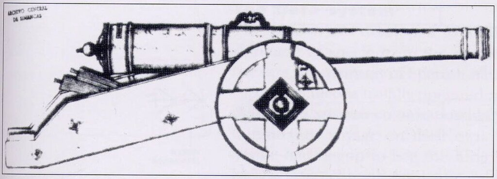
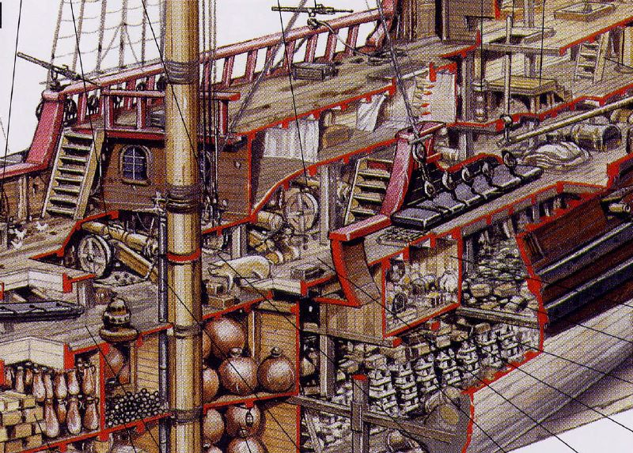
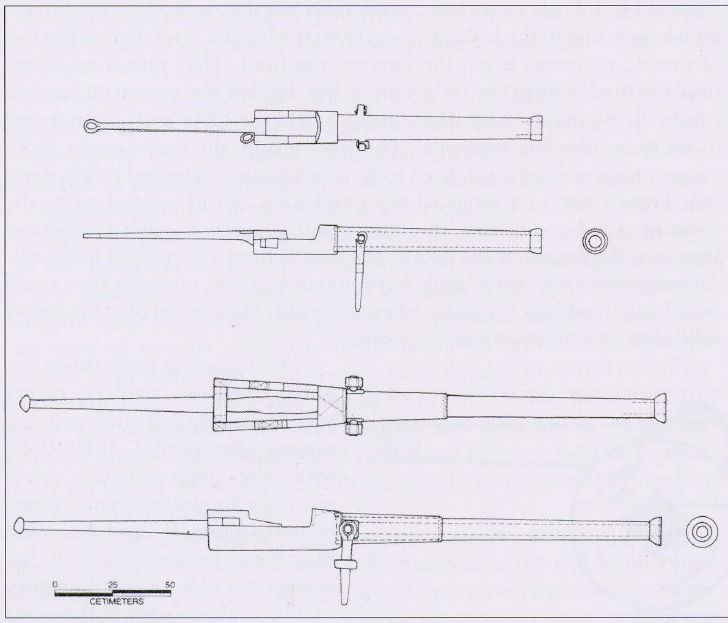

Сражение (BATALLA)
Аще Бог по нас, то кто на ны?
Петр Великий (в битве при Азове).
Что же сказать на это? Если Бог за нас, кто против нас?
Новый Завет. Послание к Римлянам святого апостола Павла. Глава 8.
К читающим записи в моем журнале: не обращайте внимание на нерегулярность постов, две последние недели был снова в госпитале, где нет интернета и персонал строго пресекал все нарушения внутреннего распорядка. Но сейчас будет полегче, думаю.
А теперь перейдем к тому разделу трактата Алонсо де Чавеса Espejo de Navegantes, который освещает принципы ведения непосредственно самого сражения (подраздел BATALLA):
"Затем с флагманского корабля звучит сигнал горна; по этому сигналу все корабли начинают движение в описанном выше ордере, и как только достигнут дистанции досягаемости своей артиллерии, открывают огонь из крупных калибров, заботясь о том, чтобы первые выстрелы не прошли мимо цели. Поскольку, как я отмечал выше, когда первые и самые мощные выстрелы достигают цели, они вызывают ужас и страх у противника, который полагает, что если даже на такой дистанции снаряды производят огромные разрушения, то что же ожидать, когда корабли сблизятся; посему противник может принять решение не ожидать ближнего боя, а начинает сдаваться или отходить.
Открывая огонь, необходимо всегда начинать с самых тяжелых орудий, которые находятся на стороне или борту, обращенному к противнику, а затем передвинуть с другого борта другие орудия , которые размещены на колесных станках для передвижения по настилу верхней палубы и по шканцам (aquellos que tienen sus carretones que andan por cima de cubierta y tolda).

Одно из изображений в серии рисунков, показывающих станки морской артиллерии (1594) – типовой двухколесный испанский станок (Archivo General de Simancas)

Разрез галеона. Показаны такие же орудия на двухколесных станках.
После сближения с противником следует использовать артиллерию меньших калибров, и ни в коем случае не стрелять из малых орудий в начале сражения, так как на больших дистанциях вред они нанесут небольшой и противник посчитает, что у нас дефицит хорошей артиллерии, осмелеет и перейдет в атаку. Лишь после достаточного сближения необходимо использовать легкую артиллерию. А после сцепки и абордажа наступает очередь всех других видов оружия, о которых я говорил, в первую очередь, метательное оружие, стреляющее дротиками (dardos) и камнями (piedras), ружья (escopetas) и арбалеты (ballestas), горшки с зажигательной смесью (alcancías), о которых говорилось выше, и которые бросают с марсов и надстроек, а также железные ежи (чеснок, los abrojos), пальники (los botafuegos), емкости с удушающим газом (pildoras, англ. stinkballs), гранаты (las granadas), крючья для разрезания парусов и такелажа (alacranes или escorpiones, скорпионы). В этот момент должны прозвучать все трубы и с громким «ура» с каждого корабля они должны броситься на врага со всеми видами оружия и приспособлений для перерезания такелажа (guadañas) в виде насаженных на рукоятки кос и серпов (hozes enastadas), а также огнеметными трубами и горшками с зажигательной смесью (con las trompas y bocas de fuego), поражая огнем такелаж и личный состав противника.
Капитан-генерал должен воодушевлять всех во время сражения, а так как голоса его в бою не слышно, он должен передавать свои распоряжения сигналами горна, флажным сигналом или с помощью марселя. Он должен вести наблюдение по всем направлениям, занимая удобную позицию для этого, чтобы всем своим кораблям, оказавшимся в опасном положении, направить соответствующую поддержку, если они сами не видят этой опасности, или даже свой корабль направить для этой помощи.
Флагманский корабль ни в коем случае не должен вступать в абордажный бой с другими кораблями, так как в это случае он не сможет следить за обстановкой и управлять боем. И за исключением случаев, когда флагман по собственному решению идет на помощь и поддержку, не должен вступать в бой, а если это все же произойдет, то весь остальной флот может остаться без руководства и без организации взаимопомощи и поддержки одного корабля другому, и при первой же возможности корабли могут покинуть место боя и пойти своим курсом. Следовательно, капитан-генерал никогда не должен первым поспешно бросаться на абордаж, чтобы иметь возможность наблюдать за сражением и направлять помощь туда, где это более всего необходимо.
Корабли поддержки также должны оставаться в стороне и не идти на абордаж, пока не увидят, где их помощь нужна больше всего. Чем дольше они остаются свободными, тем больше у них возможность вести огонь из своих орудий, оставаясь в стороне, либо, сблизившись, использовать свое огнеметное вооружение. Кроме того, если какой-либо корабль противника попытается скрыться, они смогут организовать погоню или пойти на перехват, а также вести наблюдение и оказывать поддержку в местах, указанных сигналом капитан-генерала.
Малые плавсредства (barcas) подобным же образом остаются в стороне, пока не начнется абордажная схватка; тогда они должны подойти с противоположного борта способом, указанным выше и выполнить все необходимые действия, условленные заранее, либо с помощью своих вертлюжных пушек (versos) и аркебуз (arcabuces),

Испанские вертлюжные пушки – versos . (Texas A&M University)
либо, приблизившись, заклинить рули, или перерезать их тросы, или незамеченными взобраться на корабль противника, либо поджечь его, либо просверлить, используя коловороты, отверстия в корпусе (Dando barrenos)". (Более подробно специальные операции баркасов рассмотрены в разделе, посвященном действиям одиночного судна –g._g.).
Далее в этом разделе Алонсо де Чавес рассматривает действия по обращению с ранеными и погибшими во время боя, организации преследования противника после победы в сражении и восстановлению боеспособности своего флота.
Продолжение последует.